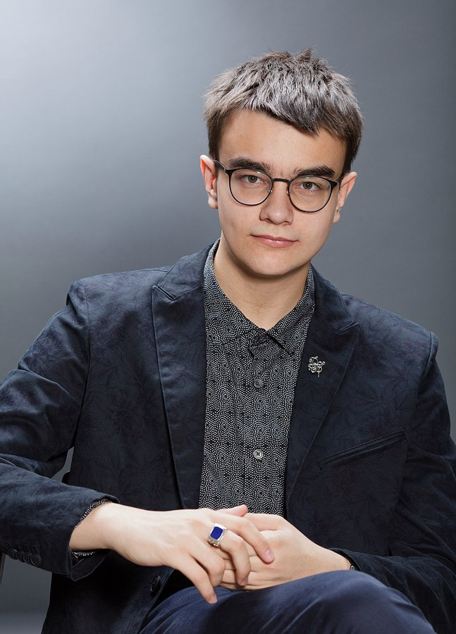
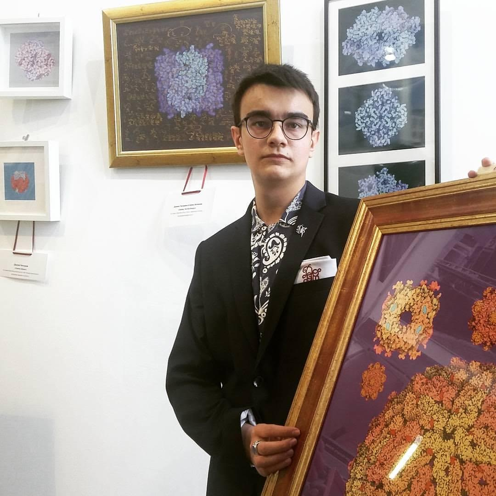

Молодой биолог и дизайнер Даниил Пискарев открывает новые миры. Неведомые, загадочные, но такие притягательные!
Эти миры связаны с молекулярной биологией. И если называть картины Даниила Пискарева по-научному, то это - «3D модели белковых структур».
Впрочем, сам дизайнер именует серию своих работ «Мир белков внутри нас». Примечательно, что его картины есть в коллекциях у многих наших знаменитостей,
а также – в Государственном Дарвиновском музее.

Картины молодого ученого относятся к модному направлению «био-тек», когда форму и поэтичность образов художнику подсказывает сама природа.
Кстати, сегодня этот тренд очень актуален современном мировом искусстве, дизайне и архитектуре.
Примечательно, что работы Даниила Пискарева ассоциативны - изображенные на них модели белков кому-то напомнят цветы,
кому-то – коралловые острова в прозрачных теплых морях, а кто-то увидит на них далекие планеты.

Эти картины хорошо смотрятся в любом интерьере - в классическом и в стиле кантри (особенно с плетенной мебелью), хай-теке и минимализме. И, конечно, в интерьерах в стиле био-тек.
Молодой ученый допускает, что модели белковых структур могут иметь не только художественное, но и практическое значение.
«Если человек постоянно смотрит на модели белков, то он настраивает себя на позитивный лад, - говорит Даниил Пискарев. - И посылает сигналы в свой мозг.
Я предполагаю, что возможен эффект плацебо, когда человек, глядя на идеальные белки, может за счет самовнушения оздоровить свой организм».